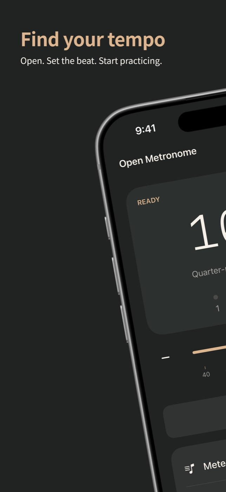
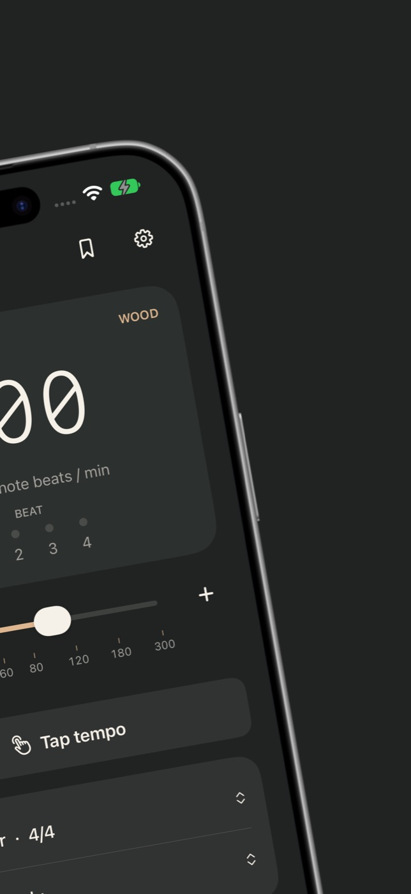
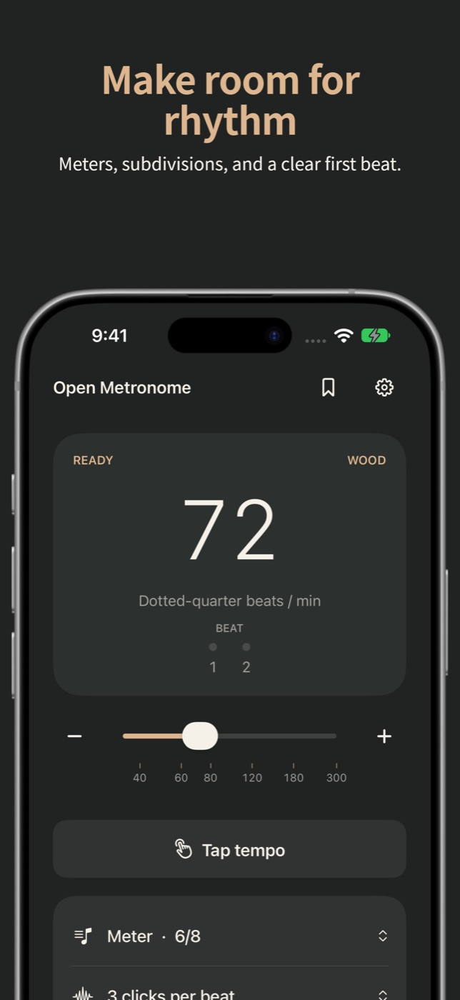

“I just saw a porn ad show up on it.”
Metronome Tuner | Practice+ on the App Store
What Open Metronome does instead
There are no ads. The beat and controls stay visible throughout practice.
Open AppCo app #4
Steady time for practice. Nothing pops up over the beat.
Address Apple's review feedback for version 1.0.0, then resubmit.
The actual app



Physical-device check
The submitted build running on a real iPhone.
Why this app exists
“I just saw a porn ad show up on it.”
Metronome Tuner | Practice+ on the App Store
There are no ads. The beat and controls stay visible throughout practice.